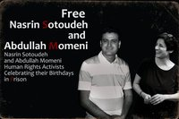

|
|
|
Browsing
Contact Us |
Campaigners |
Face to Face |
Tribune |
Interview |
News |
On the Web |
One Million |
Report
Farsi | Français | German | Italian | Spanish | العربية Also in this section
|
 Nasrin Sotoudeh & Abdollah Momeni BirthdaySunday 29 May 2011 Coming up on the birthdays of Ms. Nasrin Sotoudeh and Mr. Abdollah Momeni, two imprisoned Iranian activists, their supporters are launching a campaign to bring attention to the harsh conditions of their imprisonment and to call for their immediate release. Here is a brief biography of Mrs. Nasrin Sotoudeh and Mr. Abdollah Momeni: Mrs. Nasrin Sotoudeh 47 is married and has two young children by names of Mehraveh and Nima. She is an attorney and a civil rights activist. She is a member of Human Rights Defenders Organization, the Million Signature Campaign to Change Discriminatory Laws against Women, and the Children’s Rights Society. As an attorney, she dedicated her career to representing human rights activists, women’s rights activists, abused children, and juveniles facing death penalty. Before her detention and imprisonment she also represented political activists such as Mr. Heshmatollah Tabarzadi, Kurdish activists such as Mr. Mohammad Sadiq Kaboodvand, journalists like Mr. Issa Saharkhiz and Mr. Kaivon Samimi and women activists like Ms. Parvin Ardalan, Ms. Nooshin Ahmadi Khorasani and Ms. Khadijeh Moghadam. She also represented many of the protesters in the aftermath of the June 2009 Iranian presidential elections. Ms. Sotoudeh has won several international awards for her human rights work such as the 2008 International Human Rights Committee of Italy award, the 2010 Golden Poppy Award bestowed by the city of Florence, Italy and the 2011 PEN/Barbara Goldsmith Freedom to Write Award. On September 4, 2010, Ms. Sotoudeh was summoned to the Evin prison and was charged with propaganda against the regime, collaborating with Human Rights Defenders Organization and disturbing the peace. She was subsequently tried and found guilty of the charges by the Revolutionary Court. On January 9, 2011, Section 26 of the Revolutionary Court sentenced her to an eleven year prison term. The court also disbarred her and banned her from travelling abroad for twenty years. These sentences will begin once she leaves the prison and will practically end her legal career. Recently another court fined her $50.00 for wearing her scarf improperly. Between September 2010 and April 2011 she was incarcerated in solitary confinement and in Section 209 of the Evin prison. On April 30th, Ms. Sotoudeh was moved to Women’s Methadone section of the prison which is primarily for those with a history of substance abuse. Ms. Sotoudeh has gone on hunger strike several times to protest harsh treatments at the prison. Once she refused water for eleven days. Her weight has reportedly dropped from 128 to 97 pounds. Ms. Sotoudeh has had no furloughs and has seen only her 4-year-old son only once in 8 months. When her father passed away recently, she was denied leave to attend memorial services for him. She has not seen her mother since her incarceration because she is too ill to visit her in Evin. Ms. Sotoudeh’s only crime is rising in defense of those who cannot defend themselves. Abdollah Momeni, is a civil-political activist and the spokesperson for the Organization of University Students (The Circles of Strengthening Unity). He has been arrested repeatedly for his political and human rights activities repeatedly, once after the storming of the headquarters of the Student Organization by the Security Forces in 2007. He was last arrested on June 21, 2009. He was in solitary confinement for months and endured torture and intense pressures and was forced to make false confessions in the show trials after the disputed elections of 2009. His presence in the trials was the first news of him in months. He describes the confessions in these terms: “After much practice under the supervision of the interrogators, I went to the Court to incriminate myself. I did not have permission to get an attorney, and I did not want to legitimize the proceedings by hiring an attorney who was an agent of the interrogators, in a Court that had the defense statements dictated beforehand by the prosecution.” Momeni has indicated, during his brief stay at home, that he read the false confessions in a way that all could see that it had been dictated by the interrogators. For example in parts of the defense he refers to “Marxism”s penetrating Islamic Association…also the suggestion about travels outside the country linked to a “velvet revolution” was quickly accepted in hopes that his friends on the outside would clarify that in fact he has never left the country. In a letter dated 18 Shahrivar, 1389 (September 4, 2010), written from Evin Prison to the Supreme Leader, he has clarified some issues regarding his severe torture, false confessions, and his show trial, as well as the complete absence of any independent judiciary in his trial and has for a committee to investigate the truth. According to his letter he was repeatedly insulted and degraded, beaten heavily, threatened…on a daily basis. He had a few interrogators during his incarceration, one of whom surnamed “Siyyid” beat him more than the others. He also insulted Mr. Momeni’s deceased mother as well as wife, and he also forced the prison guards to abstain from using his name and instead called him by an insult to his mother. He was the same person who threatened Momeni with rape and sodomy using a bottle. He mentions in a part of his letter, "Sometimes the interrogator would squeeze my throat to the point of suffocation until I lost consciousness; for several days afterward I would suffer greatly while eating and drinking water because of the pain in my throat." Momeni’s coerced confessions finally lead to his temporary leave on March 6th 2010. However, while on leave, his interrogators called him on the phone every day, despite Momeni’s objections. The interrogators insisted that Momeni take prompt action to "repair" the injustice brought upon the state. Visits to Momeni’s home by several political activists caused the interrogators to increase the pressures. The number of visits and Momeni’s welcoming of the guests lead to the interrogators telling him on the phone to stop socializing and go back to his birth town of Kouh-dasht. The pressure increased even more once Mirhossein Mussavi and Zahra Rahnavard decided to pay a visit to Momeni’s home. The interrogators told Momeni on the phone that he must not allow Mussavi and Rahnavard to enter his home. Momeni and his spouse resisted these demands and Mussavi and Rahnavard paid a visit to Momeni’s home, which lead to more pressures by the officials. Interrogators said that Momeni must repeat in public what he was coerced to say in court. They wanted Moemeni to participate in a special news program on the Islamic Republic Broadcast TV channel 2. They had informed Momeni that once he performs these actions, they will guarantee his release -similar to a few other prisoners of the post-election unrest. Momeni’s refusal to comply, lead to receiving a notice that he must visit the revolutionary court in order to extend his vacation. Once he visited the court he was arrested and taken to the Evin prison without any explanation. Momeni has been sentenced to 4 years and 11 months of mandatory prison by the appeals court. Momeni went on a hunger strike along with 16 other prisoners of conscience on July 28th, 2010. He was transferred to the solitary cell. Yet all that Abdollah Momeni’s has done is that he desired to live in an Iran with freedom and equality. From the Facebook page of The Campaign |